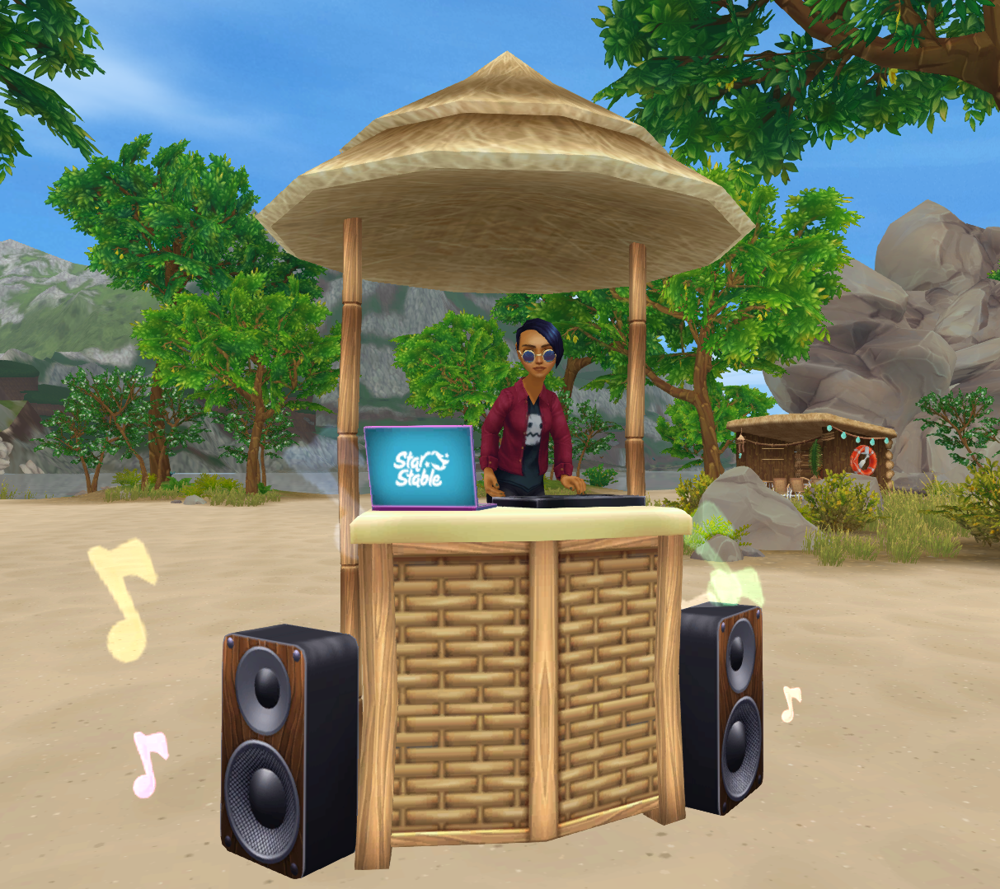
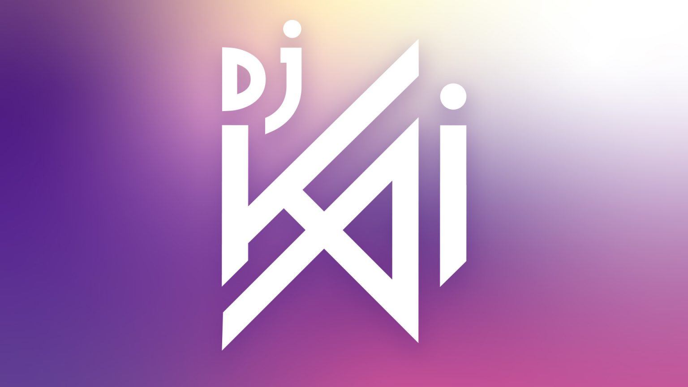

DJ Kai a Jorvik-sziget legfőbb buliszervezője. A Star Stable legfontosabb játékon belüli eseményein lép fel, ahol saját slágeres dalait és a Star Stable művészeinek remixeit játssza.

„Szia, Kai vagyok, profi DJ, én keverem a zenét ezen a bulin. Ismerlek téged? Talán nem, főleg Jorvik City-beli helyszíneken lépek fel.” - DJ Kai
DJ Kai egy lány, aki Jorvik Cityben él és imádja a zenét. Elég versenyszellemű, és nem igazán rajong az amatőr zenészekért.
DJ Kai leggyakrabban Jorvik City szórakozóhelyein lép fel, de az utóbbi időben a Téli Faluban is látták már.
A Kai név
Attól függően, hogy melyik nyelvből származik a Kai név, számos jelentése van.
